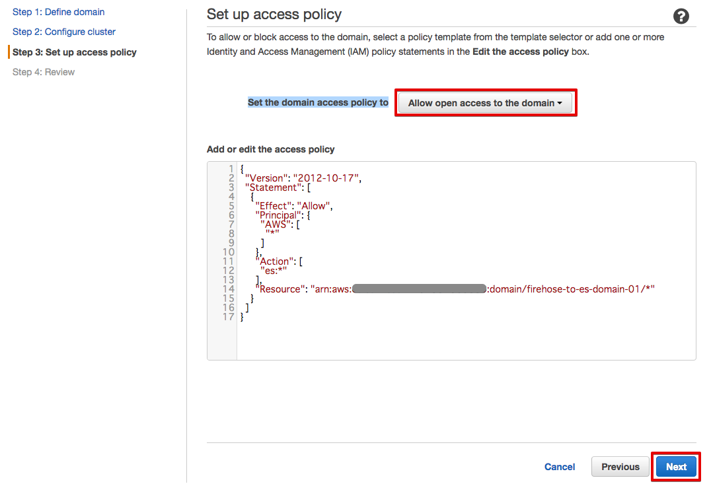
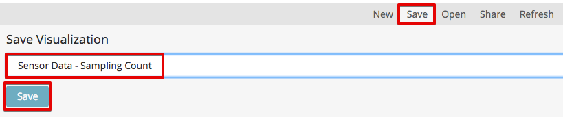
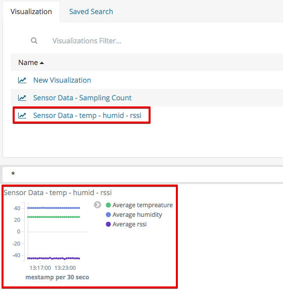
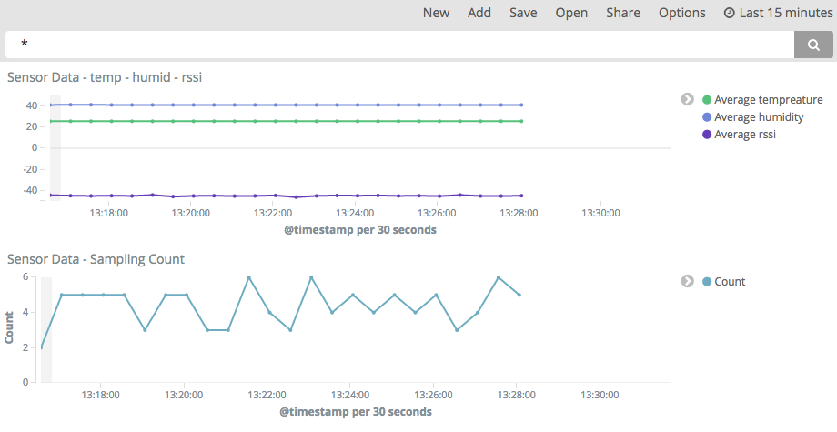

6. シナリオ2: センサーデータを可視化する¶
Lambdaでデータ変換されたセンサーデータをElasticSearch Serviceへ送り、Kibanaでグラフ表示します。データ変換には、シナリオ1で使用したLambda関数を使用します。

6.1. ElasticSearch Serviceのドメインを作成する¶
サービス一覧から[ElasticSearch Service] をクリックして開きます。

Elasticsearch Serviceの画面が開きますので、[Get started] をクリックして下さい。

Create Elasticsearch domain画面になります。
Elasticsearch domain nameに、”firehose-to-es-domain-<参加者番号>” と入力して、[Next]をクリックして下さい。

次の画面では、何も入力せずに、[Next]をクリックして下さい。 Set the domain access policy toで、”Allow open access to the domain”を選択して下さい。

確認画面が表示されるので、I accept the risk をチェックし、[OK] を押して下さい。

access policyが表示されるので、[Next]をクリックして下さい。
確認画面が出てきますので、[Confirm and create]をクリックして下さい。 Elasticsearch ドメインが出来るまで、数分かかります。

6.2. Kinesis Firehoseの設定¶
サービス一覧から[Kinesis]をクリックして開きます。
Kinesisの画面が開きますので、[Firehose コンソールに移動] をクリックして下さい。
[Create Delivery Stream] をクリックして下さい。

[Create Delivery Stream] をクリックして下さい。
DestinationをElasticsearch Serviceとして、Delivery stream nameを設定し、先ほど設定したElasticsearch ドメインを選んで、[Next] をクリックして下さい。
| 項目 | 設定 |
|---|---|
| Destination | Amazon Elasticsearch Service |
| Delivery stream name | sensor-data-to-es-<参加者番号> |
| Elasticsearch domain | firehose-to-es-domain-<参加者番号> |
| Index | sensordata |
| Type | scenario2 |
| S3 bucket | sensor-data-<参加者番号> |

Lambdaでデータ変換を行いますので、Data transformation を有効にして、Lambda関数を選んで下さい。
| 項目 | 設定 |
|---|---|
| Data transformation | Enable |
| Lambda function | ranger-raw-data-to-json-<参加者番号> |
| Buffer interval | 60 (Elasticsearch Serviceに60秒周期でデータが追加されます) |
| Error Logging | Disable |
| IAM role | Firehose delivery IAM role |


IAM role で、”Firehose delivery IAM role” を選択すると、IAM roleの設定画面が開きます。
“新しい IAMロールの作成” を選択し、ロール名を入力して、[許可] をクリックすると、Firehoseの設定画面に戻ります。
| 項目 | 設定 |
|---|---|
| IAM ロール | 新しい IAMロールの作成 |
| ロール名 | firehose_delivery_role_es-<参加者番号> |

Firehoseの設定画面で、[Next] をクリックして下さい。

最後に、[Create Delivery Stream] をクリックして下さい。

Elasticsearch Delivery Streamsの作成が開始されました。

6.3. Kinesis Firehose用のAWS IoT ルールを作成¶
サービス一覧から[AWS IoT]をクリックして開きます。

ルールを作成します。メニューから[Rules]をクリックします。ルール一覧画面で、[Create]をクリックします。

下記の項目を入力し、[Add action]をクリックします。
| 設定項目 | 値 |
|---|---|
| Name | iotrule_firehose_es_<参加者番号> |
| Attribute |
|
| Topic filter | sensor/<参加者番号> |

“Send messages to an Amazon Kinesis Firehose stream” を選択し、[Confgure action] をクリックします。

Stream nameで、sensor-data-to-es-<参加者番号> を選択し、シナリオ1で作成したIAM roleを選択し、[Update role] をクリックします。 Successfully updated role. と表示されたら、[Add action] をクリックします。
| 設定項目 | 値 |
|---|---|
| Stream name | sensor-data-to-es-<参加者番号> |
| IAM role name | IOT_to_Kinesis_Firehose-<参加者番号> |

Create a rule画面に戻ります。[Create rule] をクリックして、ルールを作成します。

6.4. Kibanaでデータを確認¶
マネージメントコンソールのサービス一覧から[Elasticsearch Service]を開きます。
ElasticSearchDomainの[Searchable documents]の数字が1より大きくなっていることを確認します。[Cluster health]が[Yellow]になっていのはシングルノード構成のためでありハンズオンでは問題ありません。

[Domain]のいリンクをクリックして開きます。[Kibana]のリンクをクリックして開きます。

Kibanaで表示させるindexを指定します。以下の値を入力して、[Create]をクリックします。 60秒周期でElasticSearch Serviceにデータが追加される設定になっているため、@timestamp 現れるまで数分かかることがあります。
| 設定項目 | 値 |
|---|---|
| Index name or pattern | sensordata |
| Time-field names | @timestamp (リストから選択) |
tempreature, humidity, rssi, @timestamp のフィールドが表示されている事を確認します。

メニューにある[Discover]をクリックし、データが届いている事を確認します。

メニューにある[Visualize]をクリックし、グラフの種類として[Line chart]を選択します。

[From a new search]から、”sensordata”を選択します。

データに[sensordata]が選択され、Y軸にサンプル数(Count)が設定されている事を確認し、X軸の設定を開始するために[X-Axis]をクリックします。

[Aggregation]に[Data Histogram]を選択し[▶]をクリックすると、右側にグラフが表示されることを確認します。

[Save] ボタンをクリックし、[Title]に[Sensor Data - Sampling Count]と入力し、[Save]をクリックします。
保存されたら、Y軸の設定を表示し、[Aggregation]を[Average]に変更し、[Field]に[tempreature](温度)を指定します。[▶]をクリックしてグラフに適切なデータが表示されることを確認します。

[Add metrics]をクリックし、湿度データを追加します。[Y-Axis]をクリックし、[Aggregation]を[Average]に変更し、[Field]に[humidity](湿度)を指定します。[▶]をクリックしてグラフに適切なデータが表示されることを確認します。

Beaconの電波強度(rssi)も同様に追加します。

[Save] ボタンをクリックし、[Title]に[Sensor Data - temp - humid - rssi]と入力し、[Save]をクリックします。

メニューにある[Dashboard]をクリックし、[Add] ボタンをクリックします。

[ Sensor Data - temp - humid - rssi]をクリックし、下側にグラフが追加されたのを確認します。
[Sensor Data - Sampling Count]をクリックし、下側にグラフが追加されたのを確認します。

[Save] ボタンをクリックし、[Title]を[Sensor Data]と入力し、[Save]をクリックします。

右上の[Last 15 minutes]をクリックすると、表示する期間や表示を自動更新する頻度を変更できます。

グラフをマウスで操作して、位置やサイズを変更することもできます。
